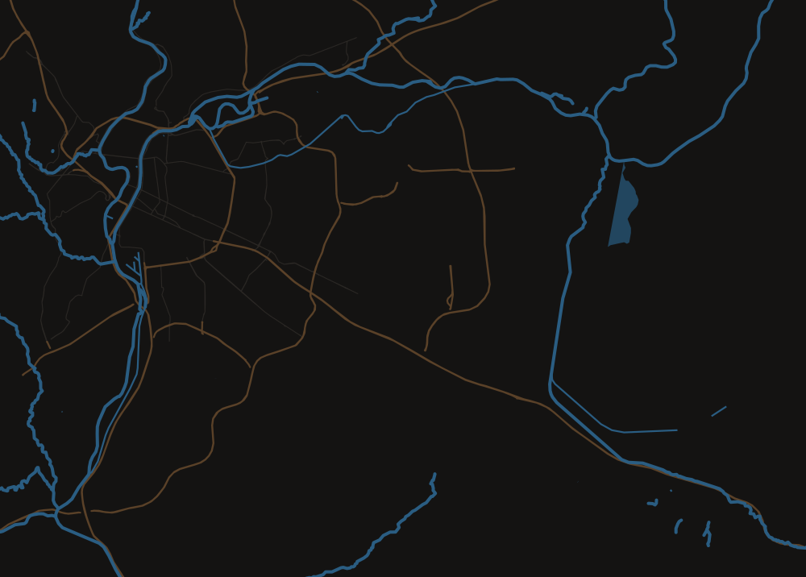
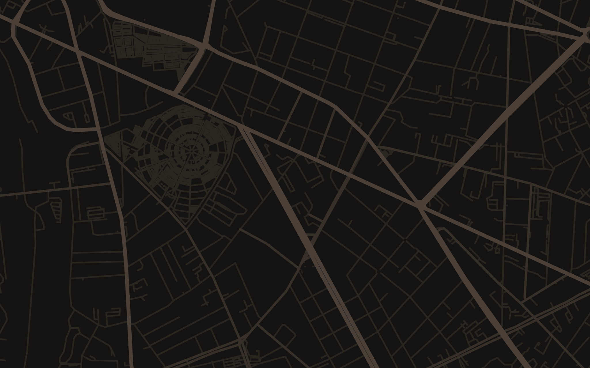
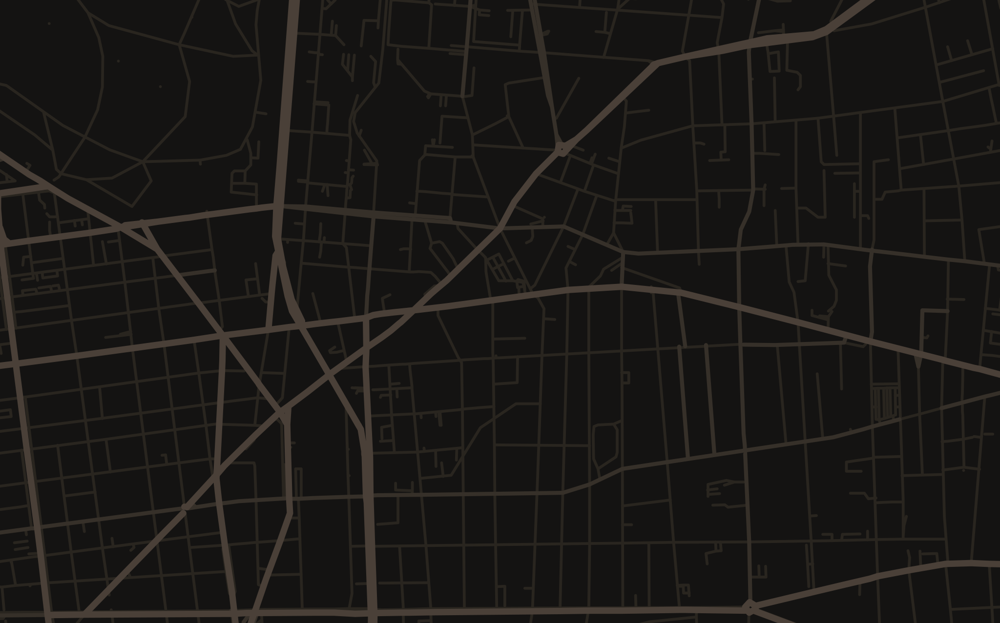
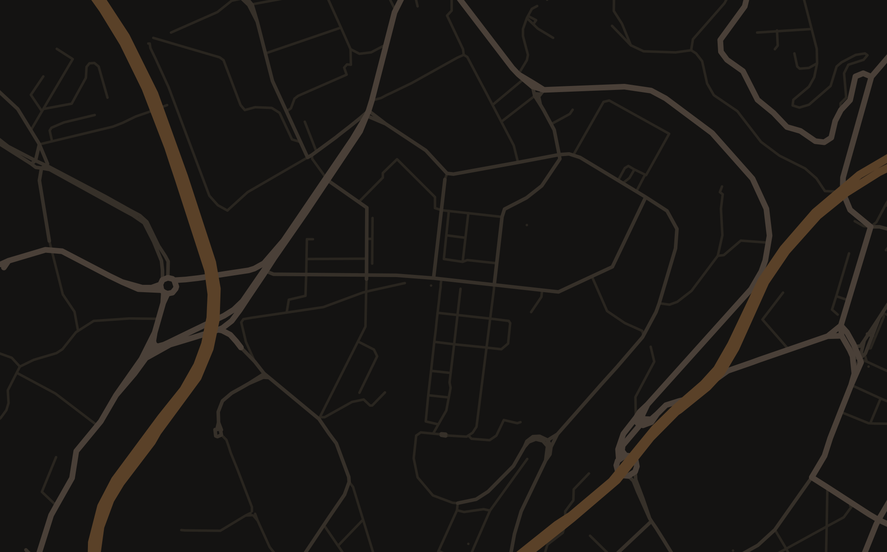
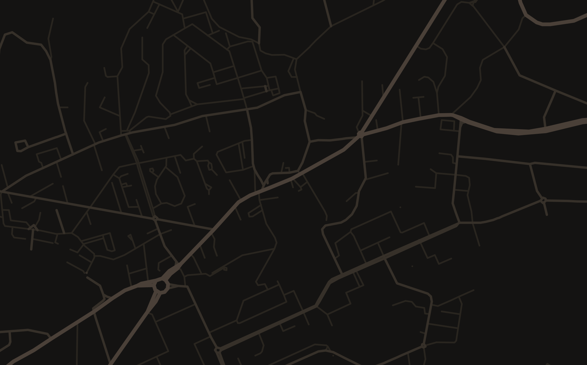
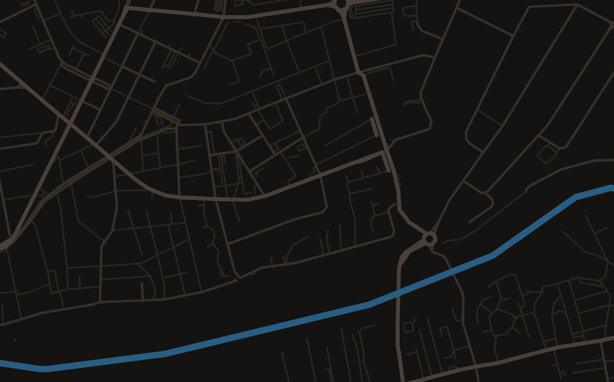
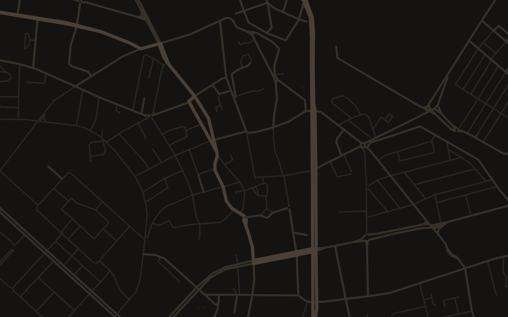
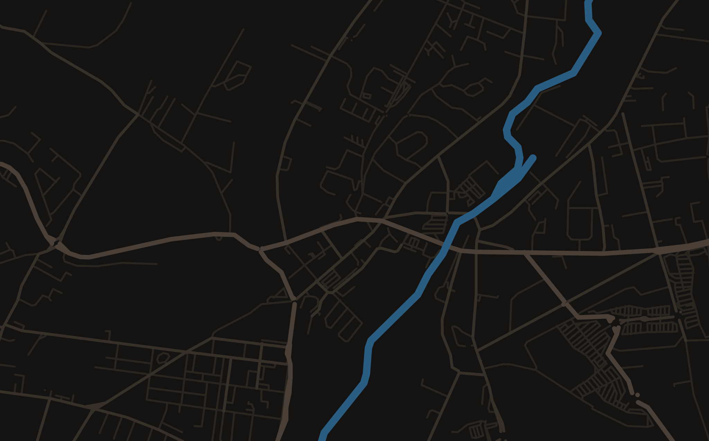
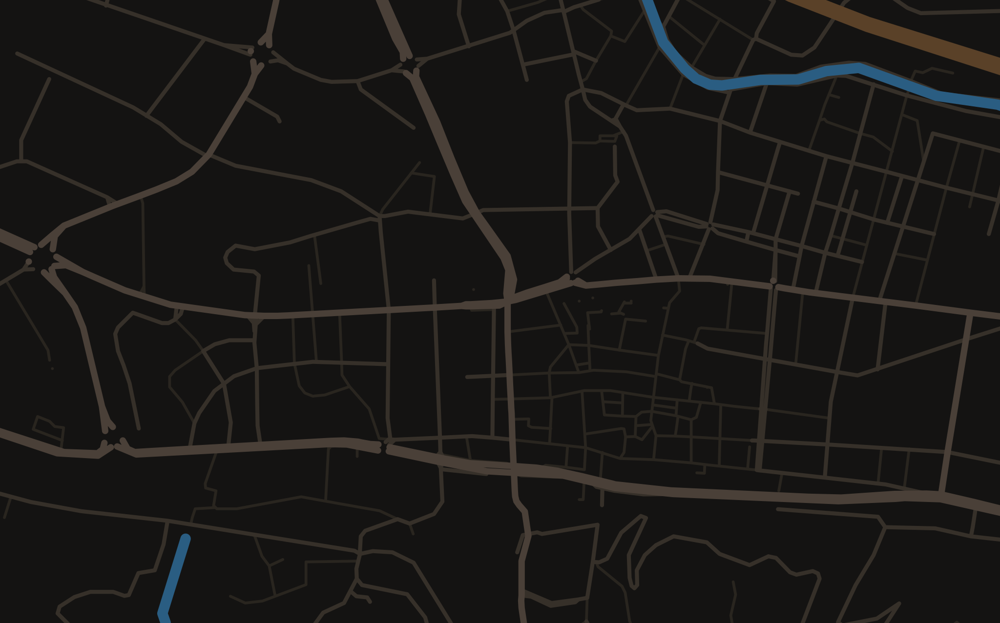

Lyon 8CharpennesLa DuchèreRillieux-la-PapeVaulx-en-VelinVénissieuxPont-de-ChéruyBourgoin-Jallieu-

Anas Grill Lyon 8 95 rue Villon, 69008 Lyon Ouvert 11 h – 1 h 4,5(306)Commander -

Anas Grill Charpennes 3 rue d’Inkermann, 69100 Villeurbanne Ouvert 11 h – 1 h 4,6(161)Commander -

Anas Grill La Duchère 3 allée Victor Muhlstein, 69009 Lyon Ouvert 11 h – 1 h 4,7(71)Commander -

Anas Grill Rillieux-la-Pape 3070 route de Strasbourg, 69140 Rillieux-la-Pape Ouvert 11 h – 1 h 4,7(101)Commander -

Anas Grill Vaulx-en-Velin 18 avenue Eugène Hénaff, 69120 Vaulx-en-Velin Ouvert 11 h – 4 h 4,4(24)Commander -

Anas Grill Vénissieux 61 boulevard Laurent Gérin, 69200 Vénissieux Ouvert 11 h – 1 h 4,7(34)Commander -

Anas Grill Pont-de-Chéruy 42 rue Grammont, 38230 Pont-de-Chéruy Ouvert 11 h – 1 h NouveauCommander -

Anas Grill Bourgoin-Jallieu 49 avenue Gambetta, 38300 Bourgoin-Jallieu Ouvert 11 h – 1 h 4,6(246)Commander